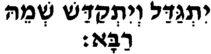
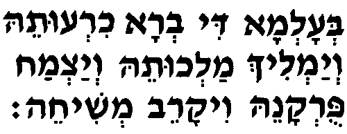
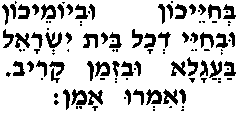
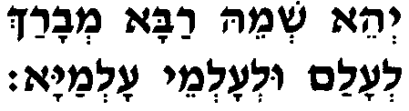
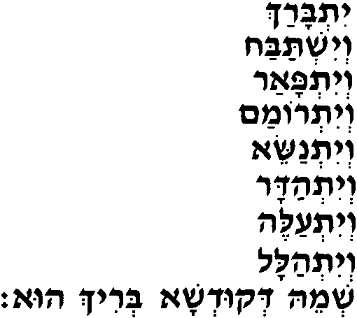
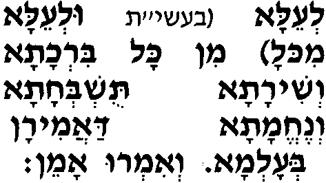
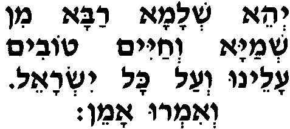

Йитгадал вейиткадаш шемэ раба.
Да возвеличится и освятится Его великое Имя...

Община отвечает: Амэн.
Беалема ди вера хирутэ веямлих малхутэ веяцмах пурканэ вика-рэв мешихэ...
В мире, сотворённом по Его воле. Да явит Он Свое царство и взрастит спасение, и приблизит приход Своего Машиаха...

Община отвечает: Амэн.
Бехайэхон увьёмэхон увехайэй дехоль бэт Йисраэль баагала увизман карив веимру амэн.
При вашей жизни и в ваши дни, при жизни всего дома Израиля, немедленно, в ближайшее время. И скажем: амен.

Община отвечает: Амэн.
Община и читающий "Кадиш" произносят:
Йеэ шемэ раба меваpax леалам улеалемэй алемая.
Да будет Его великое Имя благословенно вечно, во веки веков.

Читающий "Кадиш " продолжает:
Йитбарах
Да будет благословлено,
вейиштабах
восхвалено,
вейитпаар
прославлено,
вейитромам
возвеличено,
вейитнасэ
превознесено,
вейитадар
уважено,
вейиталэ
почитаемо
вейиталаль
и воспеваемо
шемэ декудша берих у.
Имя Пресвятого, благословен Он...

Община отвечает: Амэн.
Леэла (в 10 дней раскаяния улеэла миколь) мин коль бирхата веширата тушбехата венэхэмата даамиран беалема веимру амэн.
Превыше всех благословений, песнопений, восхвалений и утешений, произносимых в мире. И скажем: амен.

Община отвечает: Амэн.
Йеэ шелама раба
Да будут дарованы с небес великий мир мин шемая вехайим товим алэну веаль коль Йисраэль
и счастливая жизнь нам и всему Израилю. веимру амэн.
И скажем: амен.

Община отвечает: Амэн.
После этих слов молящийся отступает на три шага назад и, поклонившись по сторонам и вперёд, произносит:
Осэ шалом (в 10 дней раскаяния произносят ашалом) бимромав у яасэ шалом алэну веаль коль Йисраэль веимру амэн.
Творящий мир в Своих высотах! Да сотворит Он мир нам и всему Израилю. И скажем амэн.